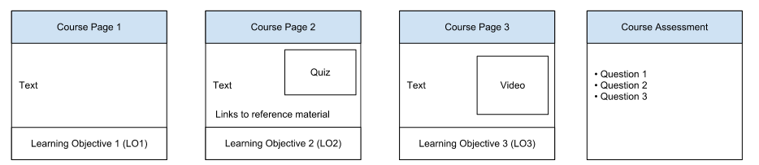

Combine Evaluación y Alcance de Datos
Como se describe en la eficacia del curso Evalúate , hay tres tipos de datos le recomendamos recoger para su curso - datos de evaluación estudiantil, los datos de alcance y compromiso, y los datos del estudiante felicidad. Datos de la evaluación y los datos de alcance y compromiso son todas las mediciones objetivas de lo que los estudiantes hicieron. Datos de los estudiantes felicidad es una información subjetiva sobre lo que los estudiantes piensan sobre el curso.
Esta página le guiará a través de un sencillo ejemplo de cómo utilizar los datos objetivos para entender la eficacia de su curso y para mejorar sus materiales del curso. Este ejemplo sólo toca la superficie de lo que puede hacer con estos datos, pero ilustra la importancia de estos datos es la mejora de la calidad de la eficacia de sus cursos.
Curso Constructor almacena los datos de evaluación en Google App Engine almacén de datos de replicación de alta. Estos datos incluyen pre, medio, y después del curso de evaluación de datos, los datos sobre las unidades que se ofrecen en el curso, y los datos sobre las lecciones que se ofrecen en cada unidad. Consulte Exportar Datos del Curso para mayores detalles. Puede utilizar estos datos para comprender los niveles de habilidad del estudiante y la mejora de habilidades.
Si usted configurar su curso para hacerlo, Google Analytics realiza el seguimiento de datos de alcance y compromiso. Estos datos le permite determinar el número de personas que llegaron con el curso, cómo participan las personas eran, y cómo interactúan con las páginas del curso.
Determinar la efectividad de los cursos
Imagina que crear un curso y quiere entender si el material es demasiado difícil o demasiado fácil, y si el material se adapte a sus objetivos de aprendizaje. El curso contiene tres páginas de material, con una evaluación al final para determinar cómo los estudiantes comprenden bien el material.

Evaluación de datos y Google Analytics
|
Lección Page |
Pregunta / Objetivo de aprendizaje |
Google Analytics |
|
1 |
Pregunta 1 evaluar si los estudiantes entendieron LO1. 95% respondió correctamente, lo que indica la mayoría de los estudiantes alcanzó el objetivo. |
Hora en la página, en links / salientes, páginas vistas y visitas de página únicas. |
|
2 |
Pregunta 2 evaluar si los estudiantes entendieron LO2. 50% respondió correctamente, lo que indica un 50% de los estudiantes no cumplen el objetivo. |
Hora en la página, páginas vistas y visitas de página únicas, los clics en los enlaces de referencia, ¿cómo volver a la lección (en / enlaces salientes). |
|
3 |
Pregunta 3 evaluar si los estudiantes entendieron LO3. 25% respondió correctamente, lo que indica un 75% de los estudiantes no cumplen el objetivo. |
Hora en la página, en links / salientes, páginas vistas y visitas de página únicas. |
Al observar los datos de la evaluación, las siguientes preguntas salir:
Si nos fijamos en los datos de la evaluación por sí misma, no es difícil entender que los estudiantes tenían problemas o cómo mejorar los materiales. Pero, si se combinan los datos de evaluación con los datos recogidos por Google Analytics, se obtiene una imagen más completa de lo que estaba sucediendo en el curso. Aquí hay algunas maneras que usted puede utilizar Analytics para responder a sus preguntas:
Google Analytics los datos, cuando se combinan con los datos de la evaluación del curso Builder, son herramientas poderosas para determinar cómo sus estudiantes están aprendiendo. Esta información puede ayudarle a prepararse para el debate con sus alumnos y hacer cambios en su material para mejorar el curso. Si bien las evaluaciones pueden proporcionar una instantánea de la comprensión del estudiante, Analytics puede proporcionar un continuo de interacción. Junto con una comunidad de aprendizaje activo, el aula tiene un fuerte mecanismo de retroalimentación para mejorar la comprensión del estudiante.